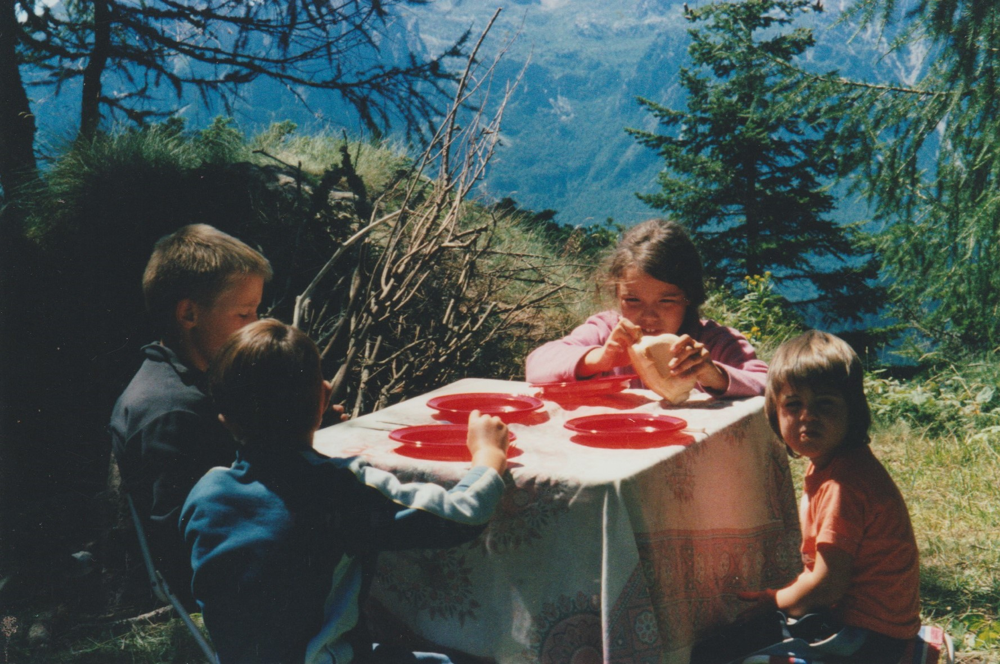
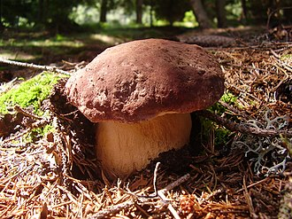
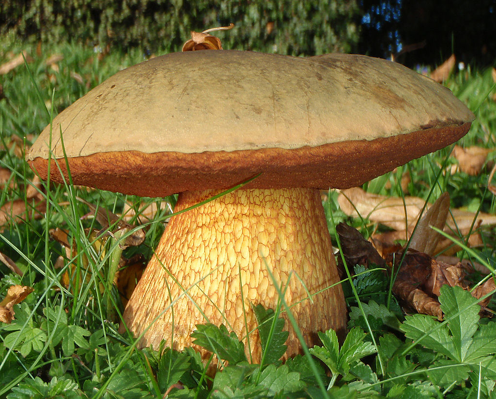
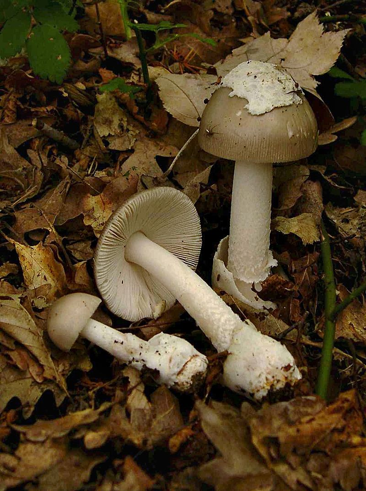
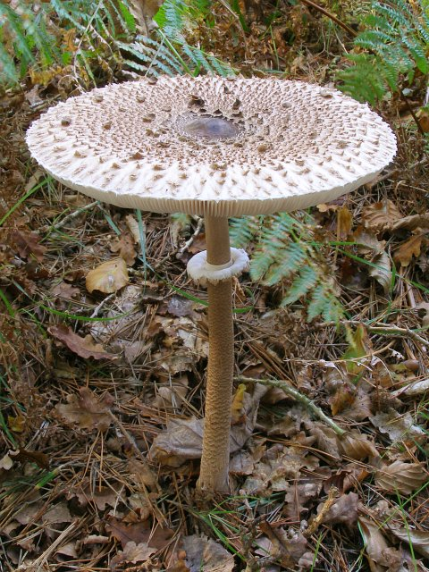
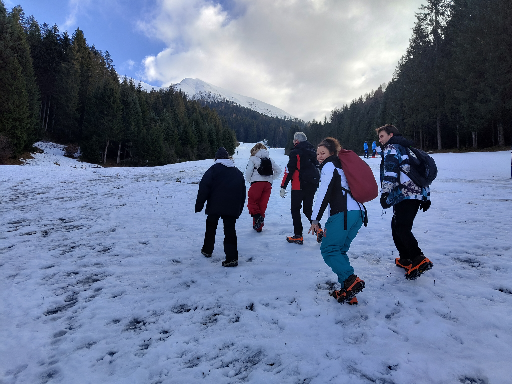
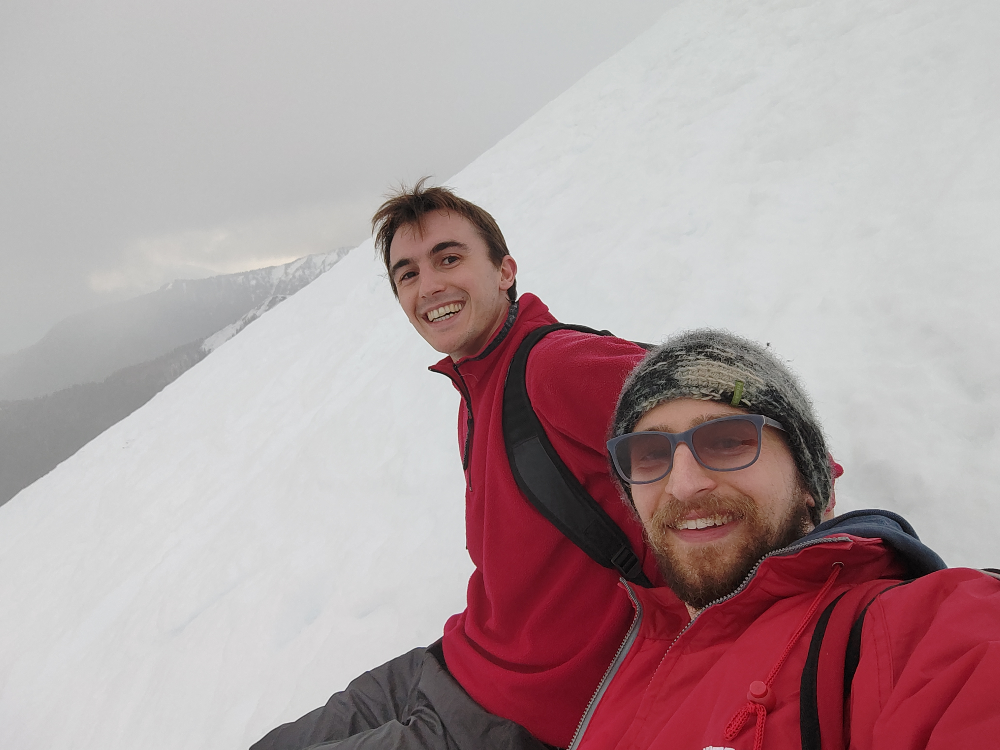
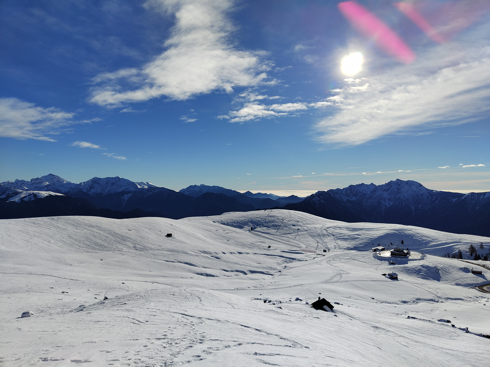
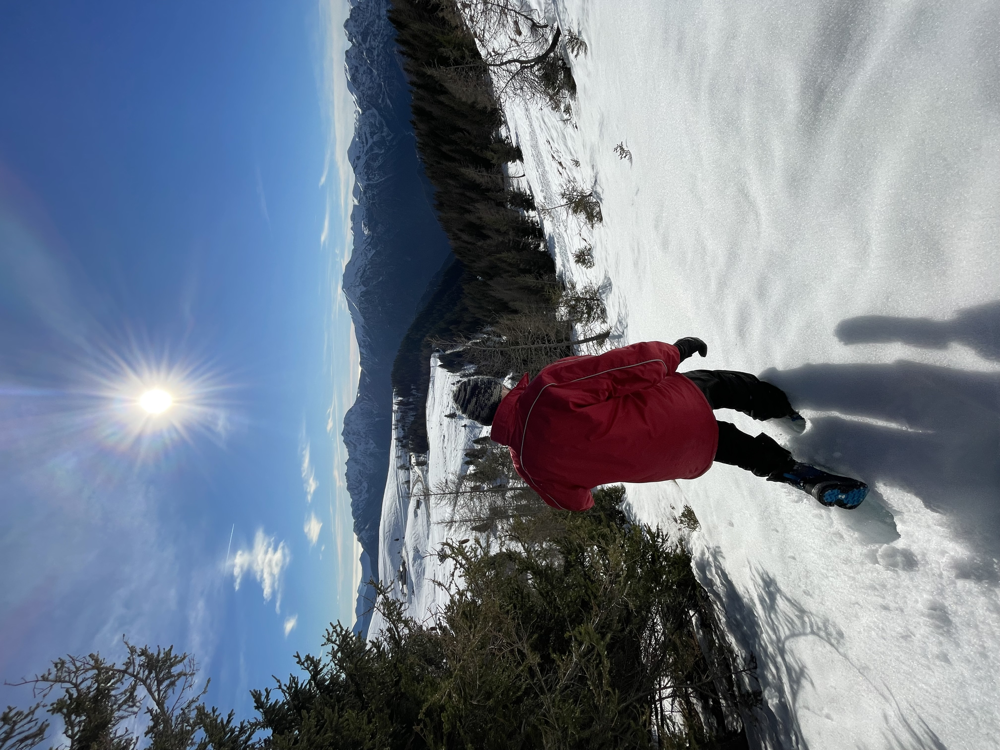
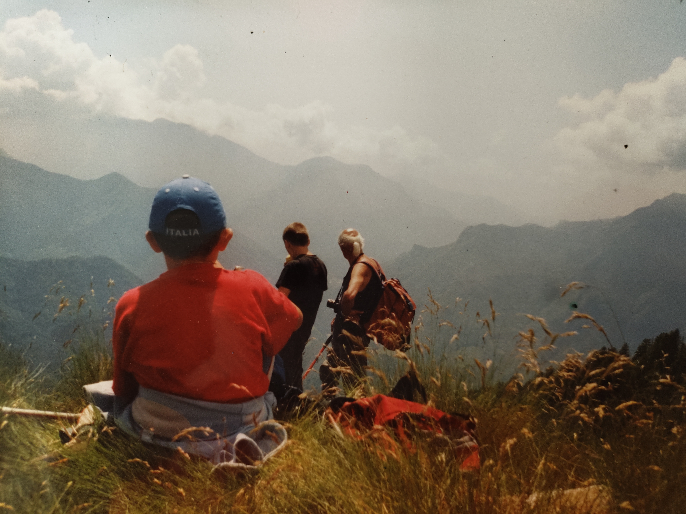

Exploring B/Log
A friend suggested keeping track of my hikes and adventures. However, I’m quite bad at keeping a journal, so I’ll store everything here rather than collecting half-finished notebooks.
 This is me (on the left), my sister (eating the bread) and my cousins at Monte Avaro. For most people this name means nothing, but this place is probably one of the most important for me. Still today, some of the most important and memories I have comes from there.
My grandparents used to bring us four up to this mountain every summer. However, this was not just a one day family hike, this was a month-long stay. A month-long stay in a van that my grandfather repourposed as a self-contained van, without running water, toilet or anything else. We slept all together, some years all inside the van, some other years we got a tent on top of it. We collected water from a spring a couple of hundred meters down the road, my grandmother used to cook us with a small gas stove or on a campfire, where some nights we prepared vin brulé (the Italian version of mulled wine).
This place was amazing. It was not popular, there was hardly anyone around, just us, an alpine cow farmer who became a family friend (you see, my grandparents used to bring our parent up here as well when they young) and a couple of people owning a hut up there. Electricity was not a thing, I remember drinking hot chocolate in the hut lighted up by oil lamps.
So how do we spend the majority of our time? Well, hiking for hours with my grandfather looking for mushrooms: boletus pinicola, boletus luridus, Lactarius deliciosus (but only if the sape was orange), mazze di tamburo (lit. drumsticks, or macrolepiota procera) amanita vaginata, russola virescens, russola cyanoxantha and a few more. These excursions were always fun for us and scary for our parents. The reason? My grandfather never used tracks, we always explored the woods, away from the areas where other people would go. So imagine, I was 6 and I was walking 8 hours next to cliffs or underneath steep woods. Surely a hard work, but fun and rewarding.




Throughout the years I acquired some specific knowledge. First of all, how to navigate that terrain safely while keeping up with my grandfather. He’s a fast walker, something I acquired too. Then, how to recognise good mushrooms (above), from those that we should avoid (amanita phalloidis, amanita muscaria, russola emetica). How to deal without the comforts of our homes for a long time. But most importantly, the love for the mountain and nature.
Recently, I went back home in Bergamo. It was a fantastic time and I managed to squeeze in a few days in the mountains. It was winter there, so found some snow (not as mush as I would have imagined, but still fun). My family and I went up to the rifugio Vodala equipped with crampons. After a great lunch, we decided to keep going up and my sister, my cousin (Luca, the one not looking at the camera in the first picture), my mum and I attempted to reach Cima Timogno. However, fog started to build up and we needed enough time to go down. So we stopped half way and turned back. I am not really experienced in winter alpine terrain, so that was a nice challenge. It made me want some training and experience in winter alpine excursions.
I also brought my wife up to Monte Avaro twice. Once to explore around and once to try bob sleading. Not the one on the ice track, but the kid version on a plastic sled. We climbed up a steep section of Monte Avaro where there were no people around and we went down a few times. It was fun to try this again after many years.




Now I am back in New Zealand, and I have a strong wanting to explore and reconnect with this part of my life I have put a bit aside over the past few years since I moved here. For a draw of luck, a friend of mine and his partner are into hiking and camping too, so it would be nice to have people around here to explore with. As said at the very beginning, this section will be a collection of the different excursions, short or long, I’ll do. Each page will have a short description (definitely shorter than this), reporting the major elements of the hike.
This section is dedicated to my grandfather that, now 88 years old, keeps asking me when we will go to the mountain to look for mushrooms. He always jokes that he might not be able to hike much anymore, but every time we end up walking 6 hours no stop…and he leads the whole way
